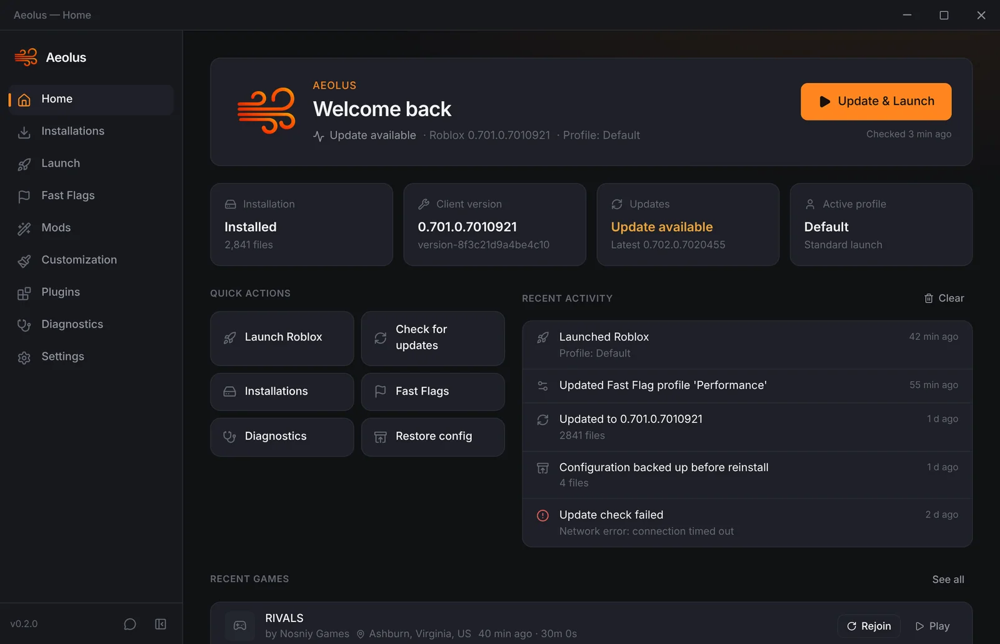
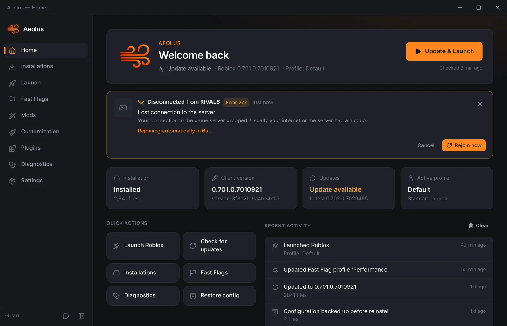
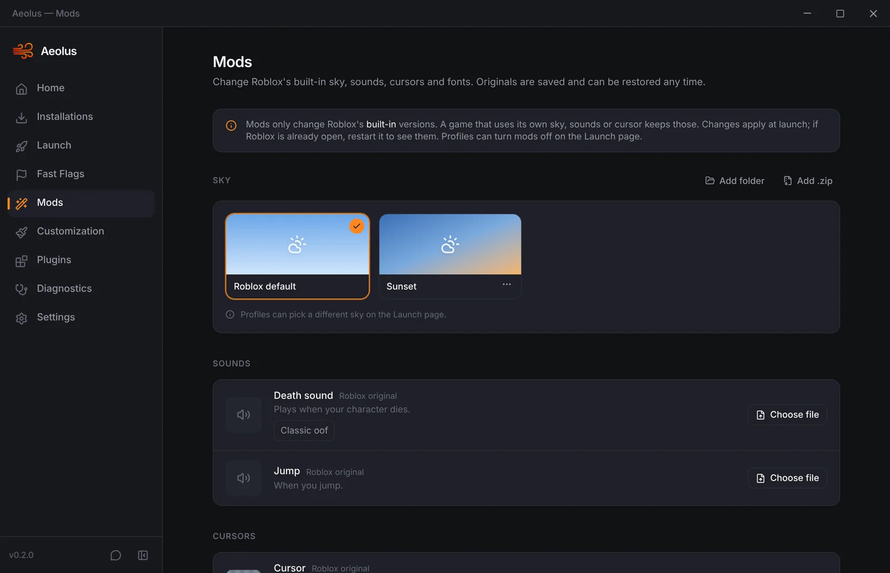

Aeolus is a free, open-source Roblox bootstrapper for Windows. Profiles, Fast Flags, mods and skies, an FPS cap, and it gets you back into your server after a disconnect.

Lost connection? Aeolus explains the error and puts you back in the same server with one click, or automatically after a 10-second countdown.
Pick 60, 144, 240 or type your own number. Set it once, or give each profile its own cap.
When Roblox crashes, Aeolus tells you the likely cause in plain English (drivers, memory, overlays) and what to try.
Different setups for different games. Each profile has its own Fast Flags, sky, mods, FPS cap and launch behavior.
Change Roblox's built-in sky, death sound, cursor and fonts. Originals are backed up and restored exactly.
Search, validate and organize flags into profiles. Shows which flags Roblox still allows, with backups and restore.
See the games you played, where the server was, and rejoin them. Your Discord status shows the game you're in.
Downloads straight from Roblox's own servers, checks every file, and can verify and repair your install.
A modern interface with themes and accent colors, a tray icon and automatic updates for Aeolus itself.
Aeolus notices when Roblox loses the connection, tells you what the error means, and rejoins the exact same server, so you're back with your friends instead of a random new server.

Swap Roblox's built-in sky, death sound, cursor and fonts with your own files or the built-in presets. Aeolus keeps the originals and puts them back whenever you want, and file checks never undo your mods.

Aeolus only does what Roblox allows a launcher to do.
Aeolus doesn't inject anything or change how games play. It installs and launches Roblox like the official launcher, and only uses Fast Flags that Roblox still allows. Mods only replace Roblox's built-in sounds, cursors, fonts and sky textures on your own PC.
Yes. New apps without a paid code-signing certificate show this warning until enough people have downloaded them. Click More info → Run anyway. If you want to double-check, scan the installer on VirusTotal or read the source on GitHub.
A 64-bit PC with Windows 10 (version 1803 or newer) or Windows 11. Aeolus uses Microsoft's WebView2, which most PCs already have. If yours doesn't, the installer sets it up for you.
Yes. Aeolus detects Roblox installs from the official launcher, Bloxstrap and Fishstrap, and can install its own copy straight from Roblox's servers.
Mods replace Roblox's built-in versions. Games that use their own custom sky, sounds or cursor keep those.
Aeolus checks for new versions by itself. You can also open Settings and click Check now.
Join the Aeolus Discord for help, bug reports, suggestions and the mods forum.
Free, open source, and takes under a minute to set up.